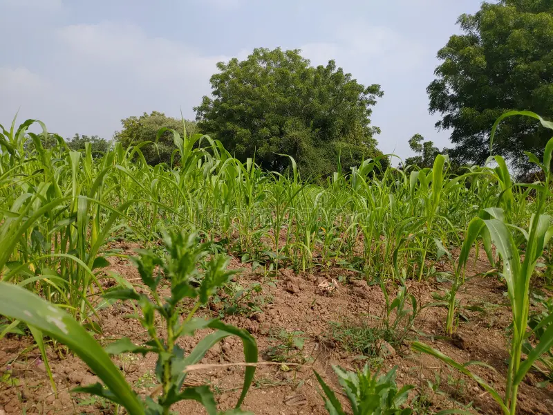

Crop Optimization at Zain Farming Ventures uses advanced farming strategies and data insights to improve crop performance. We help farmers choose the right crops, planting schedules and management techniques for maximum yield.
Key Solutions
- Crop selection strategies
- Yield forecasting
- Planting schedule optimization
- Resource efficiency planning